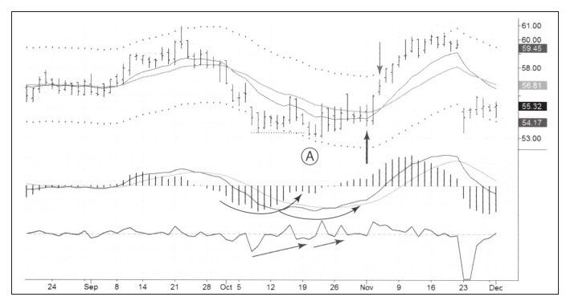
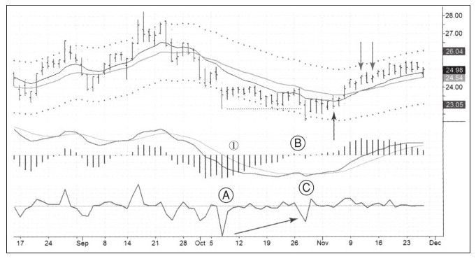

历史的顶底容易识别，好的买入机会在历史走势图中像水晶一样透明，问题是越接近图表右侧，情况就变得越乌云密布。新手看到历史图表时经常错以为他们可以在趋势底部买入、在趋势顶部卖出，并从此过上幸福的生活，有经验的交易者知道做这种梦与期望彩票中奖没有区别。
历史是既成和清晰的，未来是变动和出人意料的，所以专家比新手更谦虚。专家们抓住偶尔的波段就非常满足，他们在混沌的市场中等待有序的模式发生后介入并持有到目标价附近出场。
不断重复上述过程并在其过程中使用匹配的资金管理规则，之后你的资金曲线就以令人满意的角度向上运行。下面我将分享一些我最近的交易来说明这个原则。
2009年11月的第一个周末，也是我第一次关注塞弗林公司（CEPH）的日子，当时Spike交易集团的一名成员建议下周交易这只股票（如图10-7所示）。

CEPH已经进入熊市，但在周一，周线组合系统由红变蓝，意味着允许买入。我们从日线图中可以看到向下假突破和强力指标的底背离，表明熊市正冲出迷雾；此时MACD也给出牛市模式，MACD柱和MACD线同时走出圆底走势，尽管不如背离那么强烈，但也足够积极了。周一，也就是图中向上垂直箭头标注的那天，CEPH短暂跌破价值区，我在54.62美元做多；周二，股价走出非常漂亮的向上反转，账户盈余变得牢靠；周三，股价再度上涨但是涨幅缩小，此时价格已经接近上轨线也就是超卖区，我以57.06美元获利了结，也就是向下垂直箭头标注的那天卖出。
交易评分是53%，获得了通道宽度50%略多的利润，A评级。这是一次让我非常满意的交易。
我是不是卖得太早？确实是这样，如果继续持有到日线图的颜色由绿变蓝、直到牛市看起来疲软为止，可能会更好。但这类错误我可以接受，我在价值区买入，并在接近高于价值区的时候卖出，为下次短期波段交易腾出了资金。
第二个案例是瑞尔特不动产公司（股票代码O）的交易，股价向下假突破伴随着底背离A-B-C，周线图的颜色是1（见图10-8），允许买入。我在向上垂直箭头标注的那天以低于价值的价格做多，但分两次出场，分别由图中的向下垂直箭头标注。我在价格已经达到通道上轨时卖出一半，进入超买水平；转天K线颜色变蓝，暗示我一天以后卖出另一半头寸。佣金很低，两次交易和一次交易的佣金差不多。这次交易的评分是39%和44%。

买入时没有抓到绝对的底部，卖出时也没有在波段的顶部，但仍然抓住了中间很大一部分利润。在股价接近上轨时，第一个卖出信号发出，第二个卖出信号是当日线组合系统颜色由绿变蓝时，表明牛市力量减弱。
太多交易者因为“持有浮动盈利”而让自己痛苦不堪，在对待利润这个问题上，冷静和现实的态度在长期看来是非常可取的。